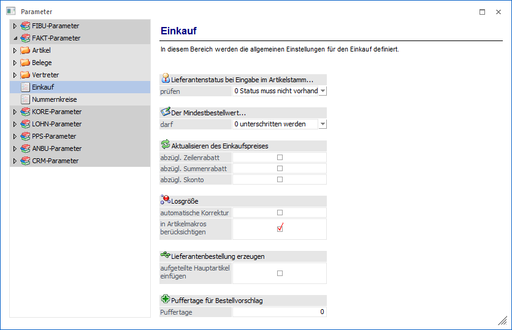
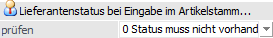
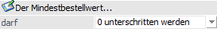
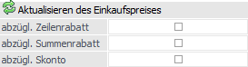
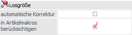
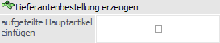
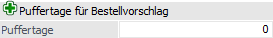

Über den Bereich "FAKT-Parameter - Einkauf" können allgemeine Einstellungen für den Einkauf in der WinLine FAKT hinterlegt werden.
Hinweis
Standardmäßig wird das Fenster in einem "Lesemodus" geöffnet, d.h. es können die bestehenden Einstellungen kontrolliert, Änderungen allerdings nicht durchgeführt werden. Hierfür muss zunächst mit Hilfe des Buttons "Bearbeiten" der "Bearbeitungsmodus" aktiviert werden. Alternativ kann diese Aktivierung auch über das Kontextmenü der rechten Maustaste (Funktion "Applikation xxx bearbeiten") erfolgen.

Lieferantenstatus bei Eingabe im Artikelstamm…

Ø (Lieferantenstatus bei Eingabe im Artikelstamm) prüfen
Mit dieser Einstellung kann der Status von lieferantenspezifischen Preisen beim Speichern im Artikelstamm geprüft werden. Folgende Optionen stehen zur Verfügung:
ü 0 - muss nicht vorhanden sein (Standard)
ü 1 - pro Artikel muss bei mind. einem Lieferantenpreis der Status A vorhanden sein
ü 2 - bei allen Lieferantenpreisen muss ein beliebiger Status vorhanden sein
Hinweise
ü In allen anderen Menüpunkten, wie z.B. indiv. Preise im Personenkontenstamm bei Kreditoren, Preise importieren, Preiswartung wird der Lieferantenstatus NICHT geprüft.
ü Die Prüfung im allgemeinen Artikelstamm erfolgt nur, wenn das Register "Lieferanten" zumindest einmal angewählt wurde.
Zusätzlich zu den oben beschriebenen Änderungen werden die Prüfergebnisse ("Kein Lieferantenpreis mit Status A vorhanden" oder "Es sind Preise ohne Lieferantenstatus vorhanden") auch auf der Artikel- / Lieferantenliste (WinLine FAKT - Auswertungen - Stammdatenlisten - Lieferantenliste) bei der Option "Artikel -> Lieferanten" angedruckt.
Der Mindestbestellwert…

Ø (Der Mindestbestellwert) darf
Im Personenkontenstamm (Register "Fakt") kann ein Mindestbestellwert eingetragen werden, welcher beim Erfassen eines Einkaufsbeleges und beim Erzeugen einer Lieferantenbestellung (Menüpunkt "Lieferantenbelege erstellen") berücksichtigt wird. An dieser Stelle kann definiert werden, was bei einer Unterschreitung passieren soll:
ü 0 - unterschritten werden
Der
Mindestbestellwert wird nicht geprüft.
ü 1 - unterschritten werden mit
Warnung
Wenn ein Beleg in den o.a. Menüpunkten erstellt wird, bei welchem der
Mindestbestellwert unterschritten wird, wird eine Warnung ausgegeben.
ü 2 - nicht unterschritten werden
(Beleg wird gespeichert)
Wenn ein Beleg in den o.a. Menüpunkten erzeugt wird,
bei welchem der Mindestbestellwert unterschritten wird, wird eine Warnung
ausgegeben. Der Beleg kann nur gespeichert, nicht aber gedruckt werden.
ü 3 - nicht unterschritten werden
(Beleg wird nicht gespeichert)
Wenn im Belegerfassen ein Einkaufsbeleg
erfasst wird, bei welchem der Mindestbestellwert unterschritten wird, kann der
Beleg nicht gespeichert werden. Wenn unter "Lieferantenbelege erstellen" ein
Beleg erzeugt werden soll, bei dem der Mindestbestellwert unterschritten wird,
wird kein Beleg erzeugt und die Dispozeilen bleiben vorhanden.
Aktualisieren des Einkaufspreises

Ø abzügl. Zeilenrabatt / abzügl. Summenrabatt / abzügl. Skonto
Bei einem Lagerzugang kann optional in der Belegart bzw. in der Lagerbuchungsart entschieden werden, ob der letzte und der niedrigste EK in den Artikelstamm zurückgeschrieben werden sollen. Dieser Einkaufspreis kann dann zur Bewertung oder auch zur Rohertragsbildung herangezogen werden. Hier kann entschieden werden, ob diese Einkaufspreise "abzügl. Zeilenrabatt", "abzügl. Summenrabatt" und / oder "abzügl. Skonto"
zurückgeschrieben werden sollen.
Losgröße

Ø automatische Korrektur
Ist diese Checkbox aktiviert, so wird in der Belegerfassung, sowie beim "Bestellvorschlag bearbeiten" (bei der Eingabe der Menge) automatisch - OHNE Nachfrage - die nächste Losgröße ins Eingabefeld gestellt.
Beispiel
Die Losgröße lautet "100 Stück". Müssten 86 Stück bestellt werden, so würde die WinLine automatisch die Menge auf 100 Stück korrigieren.
Ø in Artikelmakros berücksichtigen
Ist diese Option aktiviert, so wird in der Belegerfassung die Einkauf-Losgröße beim Expandieren eines Artikelmakros berücksichtigt. Die Checkbox ist standardmäßig aktiviert.
Lieferantenbestellungen erzeugen

Ø aufgeteilte Hauptartikel einfügen
Wenn diese Checkbox aktiviert ist und Dispozeilen für Ausprägungen vorhanden sind, so werden beim Erzeugen der Lieferantenbestellung der Hauptartikel (mit der Information "aufgeteilt") und alle Ausprägungen eingefügt. Dieses hat den Vorteil, dass bei der Verwendung von Zwischenartikel diese in einer späteren Belegstufe weiter aufgeteilt werden können.
Beispiel
Es Ausprägungsartikel sind mit Farbe und Charge angelegt. In den Aufteilungsoptionen ist eingestellt, dass im Einkauf bei Bestellungen nur auf die Farbe, bei Lieferantenlieferscheinen auf die Charge aufgeteilt werden soll.
Wird nun der Bestellvorschlag durchgeführt, so werden die Zwischenartikel bestellt. Bei der Erstellung des Lieferantenlieferscheins können die Farben weiter auf die Chargen aufgeteilt werden.
Puffertage für Bestellvorschlag

Ø Puffertage
Mit dieser globalen Einstellung in den FAKT-Parameter kann das vorgeschlagene Lieferdatum des Bestellvorschlags um eine gewisse Anzahl von Tagen vorverlegt werden, d.h. Einkaufs-"Puffertage". Die bestehende Logik für die Ermittlung des Bedarfs aufgrund des im Bestellvorschlag ausgewählten Zeitraumes, sowie der Wiederbeschaffungstage aus der Register "Preise" im Artikelstamm, wird dabei grundsätzlich beibehalten. Zusätzlich dazu können die sogenannten "Puffertage Einkauf" für die Ermittlung des Bestelldatums in diesem Feld hinzugefügt werden. Das Lieferdatum wird dann eben um diesen Wert für den Bestellvorschlag reduziert. Diese globale Einstellung kann im Artikelstamm (Register "Lager", Unterregister "Einstellungen") pro Artikel übersteuert werden.
Hinweis
Nähere Informationen zu diesem Thema, u.a. Voraussetzungen im Artikel, entnehmen Sie bitte dem Kapitel "Artikel - Register "Lager" - Unterregister "Einstellungen"" des WinLine FAKT-Handbuchs.